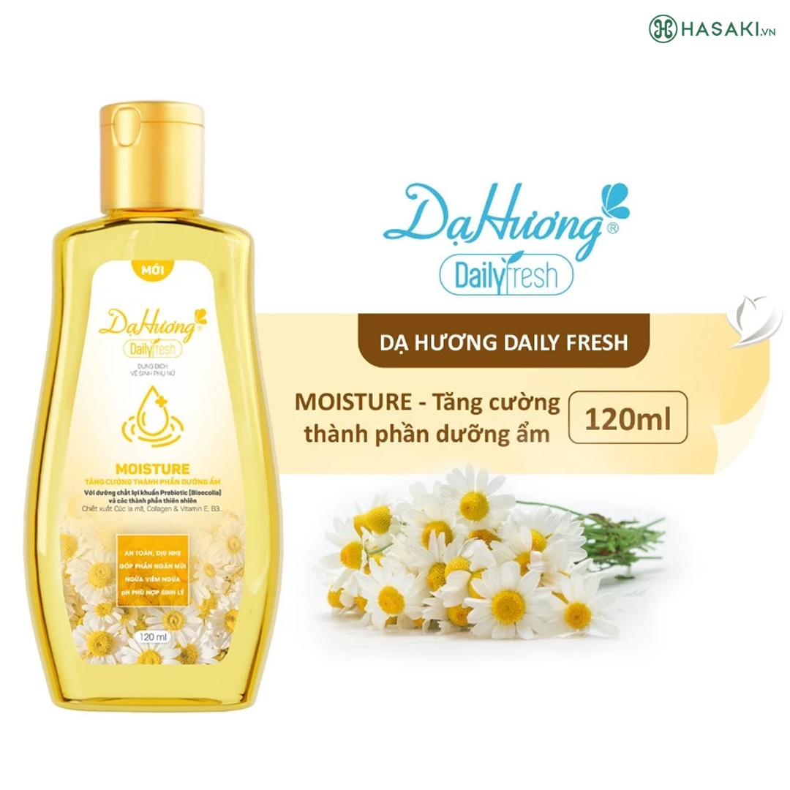
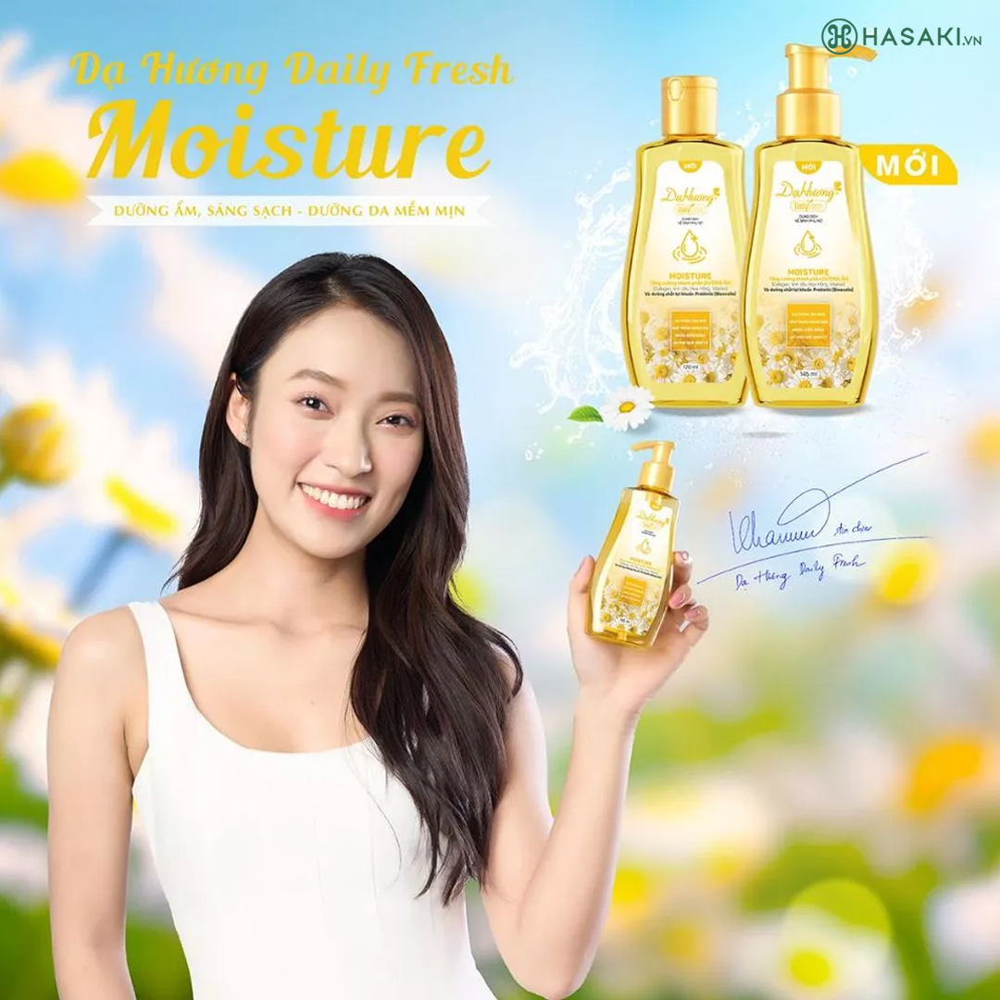

Combo 2 Dung Dịch Vệ Sinh Phụ Nữ Dạ Hương Dưỡng Ẩm 120ml
116.000 ₫ (Đã bao gồm VAT)
Giá thị trường: 142.000 ₫ - Tiết kiệm: 26.000 ₫ (18%)
Dung Tích: 2x120ml
Bạn muốn nhận hàng trước 16h hôm nay (Miễn phí). Đặt hàng trong 30 phút tới và chọn giao hàng 2H ở bước thanh toán.
Dung Dịch Vệ Sinh Phụ Nữ Dạ Hương Dưỡng Ẩm sản phẩm dung dịch vệ sinh đến từ thương hiệu Dạ Hương – Việt Nam. Với công thức kết hợp Prebiotic (Bioecolia) và các thảo dược thiên nhiên lành tính giúp làm sạch nhẹ nhàng, cấp ẩm và bảo vệ vùng da nhạy cảm một cách an toàn, đáp ứng tốt các nhu cầu chăm sóc hàng ngày cho phụ nữ.
Dung Dịch Vệ Sinh Phụ Nữ Dạ Hương Daily Fresh Moisture hiện đã có tại Hasaki với 2 dung tích: 120ml; 120mlx2.
Hiện sản phẩm Tẩy Da Chết Toàn Thân BareSoul Glowy Body Peel chính hãng đã có tại Hasaki với 2 dung tích: 50g; 2x50g.

Đối tượng sử dụng Dung Dịch Vệ Sinh Phụ Nữ Dạ Hương Daily Fresh Moisture:
- Phù hợp với mọi đối tượng giúp tăng cường dưỡng ẩm, nuôi dưỡng vùng kín tươi trẻ. Đặc biệt phù hợp cho các vấn đề về da vùng kín bị khô.
- Tăng cường thành phần thảo dược thiên nhiên giúp CẤP ẨM (Cúc la mã, Collagen, Vitamin E, B3...) kết hợp với dưỡng chất lợi khuẩn Prebiotic (Bioecolia) giúp duy trì cân bằng hệ vi sinh vùng kín.
- Làm sạch nhẹ nhàng, khử mùi hôi, nhẹ nhàng lấy đi tế bào chết trên da, giúp duy trì sự mềm mịn và độ ẩm tự nhiên, giữ cho bề mặt da vùng kín sáng sạch, giúp mang lại cảm giác thoáng mát, tự tin với hương thơm quyến rũ.
- Vệ sinh vùng kín, góp phần duy trì hệ vi sinh vật cho cơ chế bảo vệ tự nhiên vùng nhạy cảm, giúp ngăn viêm nhiễm, nấm ngứa vùng kín.
- Phù hợp để vệ sinh vùng kín hàng ngày, vệ sinh trong thời kỳ kinh nguyệt hay khi gặp phải tình trạng ra nhiều mùi hôi hoặc các vấn đề da vùng kín bị khô, thô ráp…
- Nơi khô ráo, thoáng mát.
- Tránh ánh nắng trực tiếp, nơi có nhiệt độ cao.
- Đậy nắp kín sau khi sử dụng.
- Tác dụng có thể khác nhau tuỳ cơ địa của người dùng
Ưu thế nổi bật của Dung Dịch Vệ Sinh Phụ Nữ Dạ Hương Daily Fresh Moisture:

Hướng dẫn bảo quản Dung Dịch Vệ Sinh Phụ Nữ Dạ Hương Daily Fresh Moisture:
Thông số sản phẩm
| Thương hiệu | Dạ Hương |
| Xuất xứ thương hiệu | Việt Nam |
| Nơi sản xuất | Vietnam |
| Loại da | Da thường/Mọi loại da |
| Dung tích | 2x120ml |